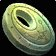
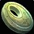
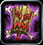
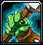
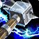
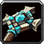

SPÉCIALISATION ÉLÉMENTAIRE
SPÉCIALISATION ÉLÉMENTAIRE Le Chaman Élémentaire est une classe de lanceur de sorts à distance hybride qui combine à la fois DPS et soutien. Il possède un burst puissant en monocible tout comme en multicible et apporte plusieurs auras à son groupe. Il fait des dégâts avec des sorts de type Nature, Feu et Givre.
C'est une classe polyvalente et accessible nécessitant de l’anticipation dans la gestion des totems.
En PvP c'est une des spécialisation les plus dure à jouer, car cette classe n'a pas de controle, mis à part un contre sort avec l'horion de terre.
Elle est très utile en bg, mais pas très opti pour de la 2c2 en arène. Par contre elle sera plus adapté pour de la 3c3 ou 5c5 de part sa polyvalence.
 LES SORTS LES PLUS UTILISÉS
LES SORTS LES PLUS UTILISÉS
De dégâts
Éclair Horion de terre (pour contrer un sort pendant l'incantation)
Horion de terre (pour contrer un sort pendant l'incantation) Horion de givre (pour ralentir)
Horion de givre (pour ralentir) Arme de givre (Basé sur les dégâts des sorts)
Arme de givre (Basé sur les dégâts des sorts) Bouclier de foudre
Bouclier de foudre Totem Nova de feu
Totem Nova de feu Totem de Magma (décamoufler les rogues et druides)
Totem de Magma (décamoufler les rogues et druides)De soutiens
 Vague de soins inférieurs
Vague de soins inférieurs Rapidité de la nature (combiné avec Vague de soins, Éclair, ou Chaîne d'éclairs)
Rapidité de la nature (combiné avec Vague de soins, Éclair, ou Chaîne d'éclairs) Guérison du poison
Guérison du poison Expiation
Expiation Bouclier d'eau
Bouclier d'eau Totem de Séisme (couper cour à un fear)
Totem de Séisme (couper cour à un fear) Totem de Purification du poison (Super utile contre les voleurs)
Totem de Purification du poison (Super utile contre les voleurs) Totem de lien terrestre (Pour ralentir plusieurs joueurs)
Totem de lien terrestre (Pour ralentir plusieurs joueurs) Totem Fontaine de mana (En cas de mana faible)
Totem Fontaine de mana (En cas de mana faible) Les caps et stats
Les caps et statsRappel : Un cap par définition c'est la valeur à partir de laquelle vous n'avez plus aucun intérêt à monter une statistique.
Expliquées par ordre de priorité :
Le critique des sorts
C'est LA stat la plus importante à monter en PvP pour un chaman élémentaire.
Le crit sort du chaman est calculé sur la base de 80 intel = 22,375 score de crit = 1% crit
L'avantage du critique des sorts (à ne pas confondre avec du critique tout cour), c'est qu'avec le talent du chaman : Fureur élémentaire, on est assuré d'infliger 200% des dégâts des sorts à chaque crit. Le crit fait également proc  idée claire qui réduit le cout en mana des deux prochains sort de 40%.
Vous avez aussi plus de chance de faire un critique avec Surcharge de foudre. Il sera donc non seulement une source non négligeable de dps, mais également une source d'économie de mana.
idée claire qui réduit le cout en mana des deux prochains sort de 40%.
Vous avez aussi plus de chance de faire un critique avec Surcharge de foudre. Il sera donc non seulement une source non négligeable de dps, mais également une source d'économie de mana.
Mieux vaux prioriser cette stat, que du dégâts des sorts ou de l'intelligence. En PvP il vous faut au moins atteindre les 17% de coup critiques de base. La vous ferez déjà de bon critiques, mais ce n'est pas suffisant, car le cap monte à 23% (Sans compter les talents chaman Appel de la foudre et Maîtrise des flots qui vous donnent un total de 10% score de critiques)
Vous pouvez toutefois monter légèrement au dessus du cap, à 26%, car la résilience diminue les chances de recevoir un coup critique.
Le dégât des sorts
C'est une stat importante, mais moins rentable que le critique des sorts. Cette stat n'a pas vraiment de cap, mais vous allez la monter uniquement avec le stuff, les enchantements et un peu avec les gemmes. Vous pouvez aussi ajouter un bijoux dégâts des sorts en plus de votre  trinket PvP comme le bijoux
trinket PvP comme le bijoux  Icône du croissant d'argent ou  Don de Xi'ri (qui vous donne aussi du critiques)
Icône du croissant d'argent ou  Don de Xi'ri (qui vous donne aussi du critiques)
Avec 600 de dégâts des sorts au début vous commencerais à être bien. Ensuite avec le stuff vous ne monterez pas plus de 900 de dégâts des sorts.
La pénétration des sorts
Cette stat ci comparé au toucher des sorts, évite les résistes adverse. C'est à dire que plus vous avez du score de pénétration, moins l'ennemi va "résister" à vos sorts.
Peu de joueurs ont une grosse résistance à la nature, inutile donc de trop monter cette stat, sachant que les bagues PvP vous donnent 14 de pénétration des sorts chacune. Il y a l'enchant sur cape de 20 pénétration aussi, ce qui vous fait un total de 48 au score de pénétration des sorts.
Autant dire que cela suffit, car il n'y a pas de "cap" à proprement dit. Mais toutefois si vous avez des "résistes" vous pouvez mettre une gemme ou deux de pénétration des sorts (accouplé à du critique des sorts) vue qu'il vous faudra deux gemme bleue pour activer votre méta (voir plus bas)
Le toucher des sorts
Tout d'abord il faut comprendre que le toucher des sorts vous permet d'éviter "les ratés" quand vous lancer un sort (à ne pas confondre avec la pénétration des sorts).
En PvP contre une cible de même niveau vous devrez "théoriquement" avoir 4% de toucher des sorts. Mais le cap est néanmoins de 3%, car il y a 1% "incompressible", c'est à dire pas nullifiable via spellhit/talent/buff/etc... La masse / dague s2 vous donne 1,19% de toucher des sorts, donc il vous manque 1,81% ce qui n'est pas énorme. Donc le score de toucher n'est qu'une stat optionnelle, et il ne vous est pas obligé de devoir la up en PvP du moins.
Si vous estimez toute fois que vous faites beaucoup de "raté", essayez d'augmenter votre toucher légérement. Mais je rappel encore qu'en PvP il est inutile de monter cette stat, car cette stat est juste en relation avec la différence de niveau de l'ennemi. Or la vous avez le même niveau que l'ennemi forcement. (Alors qu'en PvE les boss sont de niveau 73, donc ils ont plus de score de toucher)
La résilience
Cette stat est importante en PvP. Elle diminue les dégâts des sources de dégâts périodiques (DOT) et les chances de recevoir un coup critique. Diminue aussi les effets des drains de mana et les dégâts des coups critiques.
Pour faire simple le cap de la résilience est de 492.5, au dessus de 500, la résilience ne diminue plus les chances de recevoir un coup critique (diminué de 25% au max). Mais il n'y a pas de cap résilience pour la diminution des dégâts des DOT.
L'endurance
C'est la Stat de la survivabilité, assez importante en PvP. à monter en second plan à la fois avec le stuff mais aussi avec quelques enchant / gemmes.
Il ne faut pas non plus trop la monter, à partir de 10k PV, vous en aurez assez. Vous pouvez monter au max à 11K.
Vous pouvez mettre deux gemmes dégâts des sorts (gemme rouge / bleue) si votre pénétration des sorts vous convient, pour activer votre méta (voir plus bas).
Le score de hate des sorts
C'est ce qui vous réduit le temps d'incantation des sorts
Cette stat est utile au bout de 200 au score de hate (ce qui réduit de 0.25 sec l'incantation d'un éclair), en dessous, cette stat est inutile. Si vous avez un stuff full PvP, atteindre ce score est carrément impossible, même en étant full gemmé et enchant hate. (vous atteindrez environ 140 au score de hate des sorts)
Il vous faut pour le coup du stuff PvE obligatoirement pour arriver à avoir ce score de hate. Le cap de cette stat est à 390 qui correspond à 0.5 secondes gagné sur un éclair.
Après cette stat reste un choix, mais vous allez sacrifier votre score de coup critique et donc faire moins de critique, à part si vous êtes full stuff PvE, mais la c'est la résilience que vous allez sacrifier, et vous allez prendre chère.
La hate c'est bien, mais ça bouffe la mana à une vitesse affolante, donc gardez bien à l'esprit qu'il faut bien équilibrer cette stat avec d'autres, en particulier le score de crit, qui représente une source considérable d'économie de mana via idées claires.
L'intelligence
Une stat de base utile, qui vous donnera un peu de coup critique. En PvP c'est la stat que vous montez avec votre stuff. Donc inutile d'en dire plus.
La regen mana/5sec
Stat peu importante, vue qu'en PvP les combats sont fait pour ne pas durer, surtout avec un chaman. Si vous êtes sans mana, il vous suffit de regen. Si vous êtes en combat et sans mana, il y a le bouclier d'eau et le totem de mana pour palier à ce problème.
Donc la MP5 n'est pas une stat à up en PvP
 L'arbre de talent
L'arbre de talentAvant de commencer vous pouvez voir les talents chaman sur ce site
Les points importants dans la spé Élémentaire sont :
 Réverbération (Surtout en arène) Focalisation élémentaire Focalisation des soins Rapidité de la nature
Réverbération (Surtout en arène) Focalisation élémentaire Focalisation des soins Rapidité de la natureVous pouvez cliquer sur les images pour les agrandir.
Le template le plus classique du chamélém est la 40/0/21, qui offre le plus gros burst, il existe des variantes que nous allons voir.

deux sorts ne sont pas obligatoire :
 Emprise de la terre : Augmente le rayon de votre totem lien terrestre de 20% (2/2).
Emprise de la terre : Augmente le rayon de votre totem lien terrestre de 20% (2/2).
Talent utile en arène lorsqu'on veux ralentir avec son totem plus loins, mais peut être utile en Bg aussi.
 Maitrise totémique : Le rayon d'effet de vos totems qui affectent les cibles alliées est augmenté de 30 mètres.
Talent utile lorsqu'on se retrouve éloigné de nos totems. Parfait pour le totem de glèbe, et aussi augmente le rayon des tic antifear du totem séisme.
La variante de cette spé, si vous êtes unstuff et/ou que vous prenez trop chère :

J'ai rajouté cette fois-ci :
 Protection contre les éléments : Réduit les dégâts que vous infligent les sorts de Feu, de Givre et de Nature de 10% (3/3).
Protection contre les éléments : Réduit les dégâts que vous infligent les sorts de Feu, de Givre et de Nature de 10% (3/3).
Très utiles contre les casters. Utilisable autant en arène, qu'en bg.
Boucliers élémentaires : Réduit de 2% la probabilité que vous soyez touché par un coup critique infligé par une attaque en mêlée ou à distance.
Super usefull quand on à pas ou peu de résilience.
 Guérison des anciens : Augmente la valeur d'armure de la cible de 25% (3/3) pendant 15 sec lorsque vous obtenez un effet critique en la soignant.
Très utile quand vous êtes en galère contre un CAC, mais ce talent devient rentable quand on commence à avoir au minimum 8K armure.
Notez que cette fois ci j'ai enlevé : Réverbération.
Vous pouvez très bien le rajouter et enlever des points sur les talents non obligatoire cité plus haut.
La spé du loup, 41/7/13 ou 32/7/22. Qui vous donne accès au loup fantome instant, Celle-ci est plus une spé Bg :

Ou
La spé du loup avec plus de survivabilité, 41/20/0, avec la réduction des ralentissements :

Le désavantage ici c'est que vous perdez 5% de critiques des sorts sur vos éclairs avec Maitrise des flots.
Mais vous gagnez en mobilité et en survivabilité avec Résistance.
Qui augmente le valeur d'armure des objets de 10% et réduit sur vous la durée des effets de ralentissant le mouvement de 50% (5/5).
La spé arène 3c3 et 5c5, 37/0/24, avec la réduction des effets de silence :

Ici vous gagnez Esprit Focalisé : Réduit de 30% la durée de tous les effets de silence ou d'interruption utilisés contre vous. (3/3)
La spé arène 3c3 / 5c5 assist heal, 31/0/30 avec l'augmentation de l'efficacité des sorts de soins :

Cette spé est fait pour jouer assist heal, un mixte entre le heal et le dps avec un rajout de  Purification : Augmente de 10% l'efficacité de vos sort de soins.
Purification : Augmente de 10% l'efficacité de vos sort de soins.
La spé Shock, 25/36/0, spé avec un tout autre gameplay :

Ou la 29/32/0

En effet cette spé est un mixte entre la spé amélio et la spé élém.
Elle se joue avec du stuff élémentaire, mais avec deux armes (deux dagues de préférence, car il faut des armes rapide) enchant +40 dégâts des sorts.
Niveau game play ça se joue au cac comme un amélio, et le but du jeu est de taper avec ses dagues et de faire proc Arme de givre et utiliser  Frappe-tempête qui va augmenter le dps de vos Horion de terre
Sur la deuxième spé vous avez plus un game play d'élém, où vous pouvez utiliser vos éclairs avec la Frappe-tempête que vous devez appliquer au cac et qui augmentera les dégâts des éclairs. Vous pouvez monter à des éclairs de 4K avec du stuff.
Mais par contre vous n'avez pas de bouclier, donc pas d'armure, donc moins de survie contre les cac.
 Les gemmes
Les gemmesPour ce qui est des enchants et gemmes en gros il vous faut du critique des sorts ! c'est ce qui fera que vous allez burst, car les crits font 200% des dégats normaux.
 Méta-gemme Diamant Brulétoile de rapidité : +12 dégâts sorts, augmentation de la vitesse de course (Meta gemme à avoir avec les éclats d'esprit à Auchindoun)
Méta-gemme Diamant Brulétoile de rapidité : +12 dégâts sorts, augmentation de la vitesse de course (Meta gemme à avoir avec les éclats d'esprit à Auchindoun)
Il vous faut 2 gemmes jaunes et 1 gemme rouge pour pouvoir l'activer
 +8 critique des sorts, ou
+8 critique des sorts, ou  +10 critique des sorts
+10 critique des sorts +4 critique des sorts +5 dégâts des sorts, ou
+4 critique des sorts +5 dégâts des sorts, ou  +5 critique des sorts +6 dégâts des sorts
+5 critique des sorts +6 dégâts des sorts Méta-gemme Diamant Bruleciel chaotique : +12 score crit des sorts et +3% aux degats des sorts critiques
Il vous faut 2 gemmes Bleues pour l'activer
Si vous voulez monter votre pénétration des sorts optez pour cette compo :
+8 critique des sorts, ou +10 critique des sorts +4 critique des sorts +5 dégâts des sorts, ou +5 critique des sorts +6 dégâts des sorts +4 critique des sorts +5 pénétration des sorts, ou
+4 critique des sorts +5 pénétration des sorts, ou  +5 critique des sorts +6 pénétration des sorts x2
+5 critique des sorts +6 pénétration des sorts x2Si vous avez assez de pénétration des sorts, passez à une compo qui monte l'endurance :
+8 critique des sorts, ou +10 critique des sorts +4 critique des sorts +5 dégâts des sorts, ou +5 critique des sorts +6 dégâts des sorts +5 dégâts des sorts +6 Endurance, ou
+5 dégâts des sorts +6 Endurance, ou  +6 dégâts des sorts +7 Endurance x2
+6 dégâts des sorts +7 Endurance x2Que ce soit l'une ou l'autre compo, vous avez le même score de coup critiques des sorts.
 Les enchantements
Les enchantementsPar ordre de priorité
Casque
Arcanum du gladiateur (+18 Endurance et +20 au score de résilience) Réputation Opération Soleil brisé Amical.
Glyphe de puissance (+22 dégâts des sorts, +14 toucher des sorts) Réputation Sha'Tar Révéré.
Epaules
Calligraphie superieures de discipline (+18 dégâts des sorts, +10 score de critique des sorts) Exalté Aldor
Calligraphie supérieure de l'orbe (+12 dégâts des sorts, +15 score de critique des sorts) Exalté Clairvoyant
Calligraphie de discipline (+15 dégâts des sorts) Honoré Aldor
Calligraphie de l'orbe (+13 score de critique des sorts) Honoré Clairvoyant
Torse
Pts vie exceptionnels (+150 point de vie)
Résilience majeur (+15 Résilience)
Carac. exceptionnelles (+6 à toutes les caractèristiques)
Brassards
Puissance des sorts (+15 dégâts des sorts)
Robustesse (+12 Endurance)
ou à la limite Intelligence majeure (+ 12 Intelligence)
Cape
Pénétration des sorts (+20 Pénétration des sorts)
Armure majeure (+120 Armure)
ou à la limite Résistance majeure (+7 à toutes les résistances)
Jambes
Craft par un Couturier
Fil ensorcelé runique (+35 dégâts des sorts, +20 Endurance)
Fil ensorcelé mystique (+25 dégâts des sorts, +15 Endurance)
Gants
Puissance des sorts majeure (+20 dégâts des sorts)
Frappe-sort (+15 toucher des sorts)
ou à la limite Explosion (+10 critique des sorts), mais moins rentable.
Pieds
Robustesse (+12 Endurance)
Vitesse du sanglier (+9 Endurance et augmentation de la vitesse de course)
Tout dépend de votre méta gemme puisque l'augmentation de la vitesse ne se cumule pas.
Bagues
Si vous avez enchantement
Puissances des sorts (+12 dégâts des sorts)
Arme
Puissance de sorts majeure (+40 dégâts des sorts), le must absolu pour caster dps
Bouclier
Endurance majeur (+18 Endurance)
Intelligence (+12 Intelligence)
Résilience (+12 Résilience)
Résistance (+5 à toutes les résistances)
 Guerrier
Guerrier
Contre cette classe, il vous suffit de la ralentir, et de lancer vos sorts avec un fake cast au début (c'est à dire que vous allez simuler une incantation pour la stoper de vous même), car il va tenter de vous court circuiter en vous décastant avec une  volée de coups ou un coup de bouclier (les deux ont un temps de recharge associé). Le mieux est de s'éloigner pour ne plus avoir le débuff de la technique
volée de coups ou un coup de bouclier (les deux ont un temps de recharge associé). Le mieux est de s'éloigner pour ne plus avoir le débuff de la technique  Frappe mortelle, qui diminue tout les heals de 50% pendant 10 sec, mais c'est presque infaisable contre un guerrier.
Frappe mortelle, qui diminue tout les heals de 50% pendant 10 sec, mais c'est presque infaisable contre un guerrier.
Il vous faut vous rapprocher d'un élément de décors en forme de loup (même si vous etes ralentit), tout en ralentissant le guerrier et essayer de vous éloigner de lui, en surveillant votre vie. Ne le tapez surtout pas au corps à corps et si possible utilisez des sorts rang 1 pour éviter de trop faire monter sa rage (à part si votre objectif est de le tuer).
Si vous n'y parvenez pas, et que vous vous faites décast à chaque fois, alors il ne vous reste plus qu'à dps sans sort d'incantation. Pour ça vous allez utiliser le Bouclier de foudre (le refresh à chaque fois qu'il est fini), le Totem incendiaire, l'horion de flammes, et dps au cac avec le proc Arme de givre.
Si vous manquez de résilience, vous allez avoir de la difficulté, mais sinon ce n'est pas une classe dure à battre, à moins qu'elle ai un heal derrière.
Vous pouvez mettre un Totem de peau de pierre qui fera en sorte que vous preniez légèrement moins chère, mais aussi ajouter un Totem de Séisme, si il commence à mourrir, pour vous sortir du fear qu'il risque de lancer. Mais n'oubliez pas qu'il faut le ralentir constamment, sinon il va en profiter pour se mettre légèrement à distance et vous charger avec son Interception qui va vous  étourdir pendant 3 secondes.
étourdir pendant 3 secondes.
 Paladin
Paladin
Si c'est un Heal :
Vous n'avez qu'à l'enchainer d'éclairs, et faire gaffe aux incantations de soins à décast avec l'Horion de terre. Vous pouvez poser un Totem de Glèbe pour éviter de prendre un  Marteau de la justice et être étourdi.
Marteau de la justice et être étourdi.
dispell ses buffs et bénédictions, et le ralentir sans arrêt. Le taper au corps à corps peut le gêner dans l'incantation de ses sorts de  soins.
soins.
Une fois presque mort le paladin, va utiliser  bouclier divin (bubule), ce qui le rend invulnérable, donc profitez en pour vous remonter la vie et / ou regen votre mana.
bouclier divin (bubule), ce qui le rend invulnérable, donc profitez en pour vous remonter la vie et / ou regen votre mana.
Si c'est un Paladin Vindicte(Palret) :
Il vous faut essayer de le kitting, donc le ralentir et envoyez des éclairs de loin.
Le paladin à une  bénédiction de liberté qui annule et empêche tous ralentissement, mais ce sort est dispellable avec Expiation. En plus de ça, il a de quoi dispel vos Horions (Inutile de lui mettre des Horions de flammes). Du coup il va falloir être plus malin pour le tenir à distance en jouant avec l'Horion de givre et le Totem de lien terrestre.
bénédiction de liberté qui annule et empêche tous ralentissement, mais ce sort est dispellable avec Expiation. En plus de ça, il a de quoi dispel vos Horions (Inutile de lui mettre des Horions de flammes). Du coup il va falloir être plus malin pour le tenir à distance en jouant avec l'Horion de givre et le Totem de lien terrestre.
Il aura le dessus sur vous, et vous serez obligé de vous heal plusieurs fois. Il vous controlera avec  Repentir, mais sur la durée c'est vous qui gagnez si vous savez le fatiguer, car un palret tombe vite sans mana.
Repentir, mais sur la durée c'est vous qui gagnez si vous savez le fatiguer, car un palret tombe vite sans mana.
Une fois presque mort le paladin, va utiliser bouclier divin (bubule), ce qui le rend invulnérable, donc profitez en pour vous remonter la vie et / ou regen votre mana.
Si c'est un Mageladin(Shockadin) :
Il vous faudra procéder à la même technique que le Palret. Mais attention les phases de dps du mageladin sont plus espacé, mais plus intense.
Ayant de gros dégâts des sorts, il va falloir faire en sorte qu'il ne se heal pas. Sinon c'est mort pour vous.
Une fois presque mort le paladin, va utiliser bouclier divin (bubule), ce qui le rend invulnérable, donc profitez en pour vous remonter la vie et / ou regen votre mana.
 Chaman
Chaman
Si c'est un Chaman Élémentaire :
Il vous faut avoir le dessus au niveau des décast avec l'Horion de terre, et tenter de pas vous faire décast grace au Totem de Glèbe. Essayez un fake cast pour qu'il rate ses décast aussi, et rester au cac pour gêner l'incantation de ses sorts et aussi pour dps avec le proc Arme de givre.
Enchainez le d'éclairs et activez votre Maîtrise élémentaire que lorsqu'il est à moitié de vie.
Si c'est un Chaman Amélioration :
Tenez le à distance en incantant des sorts et en le laissant vous décast volontairement, pour qu'il utilise son Horion de terre, comme ça il ne peux pas vous ralentir avec son Horion de givre, mais vous si. Tenez le à distance sinon il va tenter de vous ralentir avec son Totem de lien terrestre, placez aussi le votre si possible, et il va falloir le dps petit à petit comme ceci, sinon il aura le dessus sur vous au cac.
N'hésitez pas à vous heal, et à spam votre Totem de glèbe, car vous risquez de prendre pas mal de dégâts.
Si c'est un Chaman Heal :
Il vous suffit comme tout heal de gérer le décast des heals, et de placer votre Totem de Glèbe pour éviter que lui vous décast. N'hésitez pas à dispell son  Bouclier de terre.
Bouclier de terre.
 Chasseur
Chasseur
Si c'est un Chasseur Survie ou Précision :
Ce qu'il vous faut c'est essayer soit de rester au corps à corps pour l'empêcher de trop vous dps, ou alors utiliser l'environnement pour le dps et vous cacher au fur et à mesure.
Vous pouvez poser un Totem de purification du poison et / ou utiliser Guérison du poison pour éviter les poisons du chasseur, notamment la  Morsure de vipère qui vous pompe la mana ou le controle avec la
Morsure de vipère qui vous pompe la mana ou le controle avec la  Piqûre de wyverne.
Piqûre de wyverne.
Si vous êtes au corps à corps il va falloir le ralentir avec l'Horion de givre et le Totem de lien terrestre, car le chasseur vous ralentira aussi avec  Coupure d'ailes et son
Coupure d'ailes et son  Piège de givre.
Piège de givre.
Si c'est un Chasseur spé Bête :
Il va vous mettre très chère, et il ne vous est pas possible de le ralentir une fois son  Courroux bestial utilisé (il devient rouge). Du coup il vous faut, soit tuer son familier pour que le sort ne fasse plus effet.
Courroux bestial utilisé (il devient rouge). Du coup il vous faut, soit tuer son familier pour que le sort ne fasse plus effet.
Si ce n'est pas possible il vous faut jouer la défense, et vous cacher jusqu'à ce que le sort prenne fin. Une fois fait vous avez plus qu'à le tuer comme les autres spé cité plus haut.
 Druide
Druide
Si c'est un druide spé Heal :
Vous n'aurez pas la possiblité de le tuer seul, à moins qu'il soit nul ou unstuff, parce que le duide quand il se sent en danger peut se mettre hors distance et se heal facilement grace à sa  forme de voyage. Tout ce que vous pouvez faire c'est éviter son controle avec le sort
forme de voyage. Tout ce que vous pouvez faire c'est éviter son controle avec le sort  cyclone avec l'horion de terre, ou encore avec le Totem de Glèbe.
cyclone avec l'horion de terre, ou encore avec le Totem de Glèbe.
Il peut aussi vous décast avec sa  charge en forme d'ours. Si il n'est pas seul, vous pouvez commencer à le dps, du coup il va se heal, ensuite dps son mate qu'il va vouloir heal, et puis repasser sur lui le temps qu'il heal son camarade. Vous avez peut être et j'insiste sur le peut être la possibilité de le tuer.
charge en forme d'ours. Si il n'est pas seul, vous pouvez commencer à le dps, du coup il va se heal, ensuite dps son mate qu'il va vouloir heal, et puis repasser sur lui le temps qu'il heal son camarade. Vous avez peut être et j'insiste sur le peut être la possibilité de le tuer.
Au moment de se heal vous pouvez lui dispel quelques heal sur la durée, comme  Récupération ou
Récupération ou  Rétablissement. Par contre si il n'a qu'une
Rétablissement. Par contre si il n'a qu'une  Fleur de vie, ça ne sert à rien de lui dispel en continu. Vous flinguerez votre mana à le faire avant lui. Par contre si il a 3 stack de Fleur de vie, la oui vous pouvez mettre un coup d'Expiation.
Fleur de vie, ça ne sert à rien de lui dispel en continu. Vous flinguerez votre mana à le faire avant lui. Par contre si il a 3 stack de Fleur de vie, la oui vous pouvez mettre un coup d'Expiation.
Si c'est un druide Combat Farouche (Feral) :
Il vous faudra absolument le tenir éloigné de vous, toujours pareil avec votre Horion de givre et le Totem de lien terrestre. laissez un Totem de Glèbe pas loin, au cas où il voudrait vous controler avec un cyclone.
Il a la possibilité de vous controle avec  Estropier et de vous enchainer avec un cyclone, d'où l'utilité du Totem de Glèbe. Il peut lui aussi comme la spé heal, vous décast avec sa charge farouche en forme d'ours ou avec Estropier, utilisez dans ce cas un fake cast quand vous le voyez en forme d'ours..
Estropier et de vous enchainer avec un cyclone, d'où l'utilité du Totem de Glèbe. Il peut lui aussi comme la spé heal, vous décast avec sa charge farouche en forme d'ours ou avec Estropier, utilisez dans ce cas un fake cast quand vous le voyez en forme d'ours..
Ce qu'il vous faut absolument aussi, c'est le Totem incendiaire et un Horion de flammes actif, pour éviter qu'il se  recamoufle si il vous controle (Evitez le totem incendiaire si vous êtes en arène par contre).
recamoufle si il vous controle (Evitez le totem incendiaire si vous êtes en arène par contre).
Il suffit de le dps petit à petit à l'éclairs et Horions, et de surveiller votre vie, car le féral à un bon dps quand même.
Si c'est un druide Équilibre ou DS (Dreamstate) :
Vous allez pouvoir l'enchainer d'éclairs, mais la pareil attention aux cylones ! En spé équi ce qu'il risque de vous géner ce sont ses  Tréants (Force de la nature). Essayez donc de vous rapprocher au corps à corps pour le géner dans l'incantation de ses sorts, sinon il risque de vous dominer par son dps, car il combine à la fois du dps direct avec
Tréants (Force de la nature). Essayez donc de vous rapprocher au corps à corps pour le géner dans l'incantation de ses sorts, sinon il risque de vous dominer par son dps, car il combine à la fois du dps direct avec  Colère et des Dots avec
Colère et des Dots avec  Éeclat lunaire et
Éeclat lunaire et  Essaim d'insectes.
Essaim d'insectes.
Au moment de se heal vous pouvez lui dispel quelques heal sur la durée comme la spé heal.
 Voleur
Voleur
Vous pouvez dès le début vous mettre en forme de loup, ce qui vous évite d'être  Assommé (Car cette technique ne marche que sur un humanoïde).
Assommé (Car cette technique ne marche que sur un humanoïde).
La base c'est de ne jamais trinket (utiliser son bijou médaillon de la horde / de l'alliance) sur un  coup bas. Toujours le garder pour un
coup bas. Toujours le garder pour un  Aiguillon perfide (Ne pas l'utiliser sur le premier, à part si il y a plusieurs ennemis) Et si possible le garder absolument pour un
Aiguillon perfide (Ne pas l'utiliser sur le premier, à part si il y a plusieurs ennemis) Et si possible le garder absolument pour un  Cécité.
Cécité.
La diffulté ici, va être les décast à répétition que le rogue va vous mettre avec coup de pied, il vous faut essayer de faire comme avec le guerrier, faire du fake cast et d'ensuite pouvoir le dps.
Si vous n'y arrivez pas, faites pareil, du dps sans incantation, avec le Bouclier de foudre (le refresh à chaque fois qu'il est fini), le Totem incendiaire, l'horion de flammes, et dps au cac avec le proc Arme de givre.
Il vous faut absolument le Totem de purification du poison et utiliser Guérison du poison pour pouvoir le tenir un minimum à distance.
Attention tout de même le Voleur peut aussi vous décast de loin (si il est bon) avec  Lancer mortel. Il a aussi
Lancer mortel. Il a aussi  Cape de l'ombre qui enlève tout les effets magique et y résiste pendant 3 sec à 90%, et
Cape de l'ombre qui enlève tout les effets magique et y résiste pendant 3 sec à 90%, et  Pas de l'ombre (Suivant la spé) pour se téléporter sur vous, ce qui peut vous mettre en difficulté.
Pas de l'ombre (Suivant la spé) pour se téléporter sur vous, ce qui peut vous mettre en difficulté.
Vous pouvez ajouter un Totem de courroux de l'air pour augmenter votre dps. c'est un plus qui n'est pas négligeable.
 Prêtre
Si c'est un prêtre Ombre (SP) :
Il vous faut le dps assez rapidement, car cette classe à un dps quasi similaire au votre (c'est à dire gros dégâts en peu de temps) avec ses Dots.
Il risque de vous fear avec  Cri psychique plusieurs fois, donc n'oubliez surtout pas le Totem de Séisme. essayez de le tenir éloigné, et quand vous sentez qu'il se rapproche trop, c'est qu'il veut forcement vous fear. Il risque aussi de vous
Cri psychique plusieurs fois, donc n'oubliez surtout pas le Totem de Séisme. essayez de le tenir éloigné, et quand vous sentez qu'il se rapproche trop, c'est qu'il veut forcement vous fear. Il risque aussi de vous  Silence.
Silence.
A part tout ça, le prêtre va tenter de mettre plusieurs fois  Mot de pouvoir : bouclier, qui absorbe pas mal de dégâts, mais vous pouvez le dispel avec Expiation. N'hésitez pas à enlever aussi les soins sur la durée avec ce sort comme la
Mot de pouvoir : bouclier, qui absorbe pas mal de dégâts, mais vous pouvez le dispel avec Expiation. N'hésitez pas à enlever aussi les soins sur la durée avec ce sort comme la  Rénovation ou la
Rénovation ou la  Prière de guérison.
Prière de guérison.
Garder votre Horion de terre disponible jusqu'à ce qu'il incant soit  Attaque mentale, ou alors Toucher vampirique pour le décast. N'hésitez surtout pas à mettre TOUS le temps votre Totem de Glèbe et de surveiller si votre Totem de Séisme soit toujours présent, car il risque de vouloir vous le détruire.
Attaque mentale, ou alors Toucher vampirique pour le décast. N'hésitez surtout pas à mettre TOUS le temps votre Totem de Glèbe et de surveiller si votre Totem de Séisme soit toujours présent, car il risque de vouloir vous le détruire.
Si c'est un prêtre Heal (DP) :
Il vous sera dure de le battre, car il risque de vous burn mana avec  Brûlure de mana.
Brûlure de mana.
Mais même problème que pour la spé ombre, toujours avoir le Totem de Glèbe et le Totem de Séisme actif.
Il vous faut absolument décast et dispel ses  heals et Boucliers.
heals et Boucliers.
 Démoniste
Démoniste
Si c'est un démoniste Affli :
Même combat que le prêtre ombre, cette classe à un dps avec des Dots, il va vous falloir le Totem de Séisme et le Totem de Glèbe à gogo.
Si vous avez la possibilité de vous cacher pour vous heal avec Vague de soins inférieur, faites le. Sinon vous allez vite tomber.
Le plus important c'est de décast son  Affliction instable et ses
Affliction instable et ses  Drains de vie, car sinon c'est gagné d'avance pour lui.
Drains de vie, car sinon c'est gagné d'avance pour lui.
La bête noir avec cette classe c'est sa Malédition des langages, qui vous augmente le temps d'incantation des sorts de 60%, ce qui nous gène beaucoup. Et aussi le fait qu'il ai un fear instantané, comme le prêtre ombre, grace à Hurlement de terreur amélioré.
Si c'est un démoniste Lien spirituel ou Soul Link (SL) :
Même combat que le Affli, à part que le SL à ses dégâts subis partagé avec son pet. Ce qui le rend encore plus résistant. Il a aussi une plus grande résistance aux sorts.
Par contre il n'a pas de fear instant, et fait un peu moins de dps. La difficulté reste la même avec sa Malédiction des langages et son Drain de vie à surtout décast.
N'oubliez toujours pas votre Totem de Glèbe et Totem de Séisme.
Si c'est un démoniste Destruction :
Cette fois, nous avons à faire à du dps direct, donc plus de dots (ou du moins beaucoup moins).
N'oubliez toujours pas votre Totem de Glèbe et Totem de Séisme.
Cette fois-ci l'Horion de terre pour décast va vous servir pour contrer son  Immolation. Car sans Immolation sur vous, il ne vous fera pas grand chose.
Immolation. Car sans Immolation sur vous, il ne vous fera pas grand chose.
Par rapport à au dessus, cette spé à un sort pour vous étourdir, pendant 2 secondes, qui est Furie de l'ombre, et il peut s'en servir pour vous mettre l'Immolation.
Il peut vous mettre en diffulté avec sa Malédiction des langages aussi.
 Mage
Mage
Si c'est un mage spé Givre :
Tentez dès le début un fake cast, pour contrer son  Contresort, Sinon vous risquez de ne plus rien faire pendant 6 secondes. Essayez de mettre votre Totem de Glèbe qu'une fois que vous êtes gelé si possible, sinon au dernier moment. Car le mage va vite vous le détruire avec
Contresort, Sinon vous risquez de ne plus rien faire pendant 6 secondes. Essayez de mettre votre Totem de Glèbe qu'une fois que vous êtes gelé si possible, sinon au dernier moment. Car le mage va vite vous le détruire avec  Javelot de glace.
Javelot de glace.
Essayez de décast les  Éclairs de givre le plus possible. Un fois un Contresort utilisé contre vous, il vous faut burst absolument. N'hésitez pas à trinket sur une Nova plutôt que sur un
Éclairs de givre le plus possible. Un fois un Contresort utilisé contre vous, il vous faut burst absolument. N'hésitez pas à trinket sur une Nova plutôt que sur un  Métamorphose (Sheeps) si vous êtes focus, car une fois gelé, il a 50% de chance de faire un critique sur vous.
Métamorphose (Sheeps) si vous êtes focus, car une fois gelé, il a 50% de chance de faire un critique sur vous.
Vous pouvez lui dispel sa  Barrière de glace avec Expiation.
Barrière de glace avec Expiation.
Il va utiliser son  Bloc de glace une fois presque mort, ce qui le rend insensible à tout, mais ne peut pas attaquer. Profitez en pour tuer son
Bloc de glace une fois presque mort, ce qui le rend insensible à tout, mais ne peut pas attaquer. Profitez en pour tuer son  élémentaire d'eau.
élémentaire d'eau.
Si c'est un mage Feu ou Arcane/Feu :
Vous risquez de vite prendre chère, il vous faut absolument décast ses  Brûlures, sinon c'est la fin pour vous. Ici vous pouvez trinket sur un Métamorphose (Sheep). N'hésitez pas à spam votre Totem de Glèbe et à ralentir la cible le plus possible.
Brûlures, sinon c'est la fin pour vous. Ici vous pouvez trinket sur un Métamorphose (Sheep). N'hésitez pas à spam votre Totem de Glèbe et à ralentir la cible le plus possible.
La particularité de cette spé, à part son gros dps et son instant  Explosion Pyrotechnique, c'est qu'il peut vour ralentir avec sa
Explosion Pyrotechnique, c'est qu'il peut vour ralentir avec sa  Vague explosive et vont désorienter avec son
Vague explosive et vont désorienter avec son  Souffle du dragon (ne concerne pas la Arcane/Feu).
Souffle du dragon (ne concerne pas la Arcane/Feu).
N'hésitez pas à aller au cac l'embêter pour qu'il ne puisse pas caster.
Il a aussi le Bloc de glace qu'il va utiliser une fois sur le point de mourrir, profitez en pour vous soigner.
Si c'est un mage Arcane ou Feu/Arcane :
Ce qui va vous déranger avec cette spé c'est sa  Lenteur. Qui en plus de ralentir votre vitesse de déplacement, va ralentir votre vitesse d'incantation des sorts. Il va falloir jouer avec l'environnement en évitant de se faire décast comme avec les autres spé, mais aussi spam le Totem de Glèbe et Horions de terre à chaque incantation qu'il fera.
Lenteur. Qui en plus de ralentir votre vitesse de déplacement, va ralentir votre vitesse d'incantation des sorts. Il va falloir jouer avec l'environnement en évitant de se faire décast comme avec les autres spé, mais aussi spam le Totem de Glèbe et Horions de terre à chaque incantation qu'il fera.
Vous pouvez aussi lui dispel son  Bouclier de mana pour éviter qu'il encaisse vos sorts.
Bouclier de mana pour éviter qu'il encaisse vos sorts.
Une fois presque mort, il utilisera aussi sont Bloc de glace, profitez en pour vous soigner.
Légende :
[Button:1] = bouton gauche de la souris
[button:2] = bouton droit de la souris
[nomod] = bouton par défaut du clavier
[mod:alt] = alt + le bouton par défaut
[mod:shift] = shift + le bouton par défaut
[mod:ctrl] = controle + le bouton par défaut
Ces macros sont adapté pour quelqu'un qui joue à la souris, mais vous pouvez les adapter à votre sauce par exemple :
Avec l'Horion de givre, version à la souris
Bouton gauche Horion de givre rang max, bouton droit Horion de givre rang 1.
Version bind clavier :
[Touche par défaut] Horion de givre rang max, Alt+[touche par défaut] Horion de givre rang 1.
Pour un raccourci clavier il faut indiquer [nomod] pour la touche par défaut, et vous pouvez remplacer alt pour autre chose sur la deuxième ligne.
Notez aussi que si vous ne mettez aucun rang de sort, le rang maximum sera utilisé.
Horion de terre avec focus
Bouton gauche Horion de terre rang max sur notre cible actuelle, bouton de droite Horion de terre rang 1 sur le focus (Il vous faut pour ça un focus avec /focus). Targetlasttarget vous permet de recibler votre ancienne cible.
Activation de plusieurs sort + bijoux
Bouton gauche active la Maîtrise élementaire et le bijou (Don de Xi'ri) avec la Furie sanguinaire (il vous faudra 2 cliques), bouton droit active en un seul clique Maîtrise élementaire et le bijou (Don de Xi'ri).
Avec Totem de magma
Bouton gauche Totem magma rang max pour faire du dps, bouton droit de la souris Totem de magma rang 1 pour trouver un fufu camouflé et pas cramer ça mana.
Instant heal ou éclair
Bouton gauche éclairs instantané avec la rapidité de la nature, bouton droit heal instant. Ce genre de macro évite qu'on se fasse dispel la rapidité de la nature
Équiper un totem et / ou armes
/equip est fait pour switch d'armes ou de totems quand vous appuyez sur un sort. La partie en dessous vous permet si vous ciblez quelqu'un et que vous appuyez sur alt, que ça heal votre personnage.
Même chose pour le totem de Bouclier d'eau
Rien de particulier, juste de pouvoir équiper le totem qui concerne le Bouclier d'eau, qui peut être d'une grande aide.
Chaînes d'éclairs
Bouton gauche vous permet d'activer votre bijoux en même temps que vous incantez Chaîne d'éclairs, bouton droit vous permet d'activer la Maîtrise élémentaire en même temps que vous incantez Chaîne d'éclairs. Utile aussi pour éviter de se faire dispell la Maîtrise élémentaire.
Guérison du poison et Expiation
Ce sont deux sort de dispell que je vous conseil de regrouper. Bouton gauche vous permet d'utiliser Expiation, et bouton droit vous permet d'utiliser Guérison du poison.
Macro anti-rogue/feral
Vous pouvez la spammer dès que vous voyez un fufu en camouflage, la macro va vous permettre de cibler le premier ennemi et de lui appliquer l'horion de flammes


 Haut de page
Haut de page{kind=link}